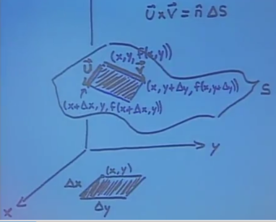

Önceki derste bir yüzey içinden olan akış hesabını gördük. Bu bir çift entegraldi,
$$ \int \int_S \vec{F} \cdot \hat{n} \mathrm{d} S $$
ki $\hat{n}$ yüzeye olan birim normal, $\mathrm{d} S$ ise yüzeydeki alan öğesiydi. Gördük ki farklı yüzeyler için farklı $\hat{n}$ ve farklı alan öğe formülü $\mathrm{d} S$ olabiliyordu. Bulmamız gereken yüzeyin ufak bir parçası için $\hat{n} \mathrm{d} S$'in ne olacağını bulmak.
Diyelim ki yüzeyin $xy$ düzlemine olan yansımasındaki / "gölgesindeki" ufak bir dikdörtgeni alıyoruz, ki bu dikdörtgenin kenarları $\Delta x$ ve $\Delta y$, ve onun yüzey $S$'deki karşılığına bakıyoruz.
Yani soru yüzeydeki o ufak parçanın alanı ve normal vektörün ne olduğu. Dikkat edersek eğer yeterince ufak ise yüzeydeki o ufak parça bir paralelograma benzeyecek. Kabaca tabii, belki biraz kavisi vs olacak ama yaklaşık olarak bir düz paralelogram. Ve hatırlarsak uzayda bir paralelogramın alanını çapraz çarpım ile nasıl hesaplayacağımızı gördük.

O zaman, eğer yeşil okla gösterilen o iki kenarın vektörünü bulabilirsek, alanı hesaplayabileceğiz demektir çünkü çapraz çarpım sonucu olan vektörün büyüklüğü, paralelogram alanına eşittir. Daha da iyisi çapraz çarpım sonucunu yönü bize aradığımız bir diğer vektör, yüzey normalini de verecektir. Önceki derste işte bu sebeple $\hat{n} \mathrm{d} S$ hesabını bulmanın bazen daha rahat olduğunu söylemiştim.
Vektörleri, ufak alanları daha iyi göstermek için bir resim,

$\vec{u}$ ve $\vec{v}$'yi bulalım, eğer onları bulabilirsek,
$$ \pm \vec{u} \times \vec{v} = \Delta S \cdot \hat{n} $$
hesabını yapabiliriz.
Resme bakılınca $\vec{u}$ başlangıcı $x,y,f(x,y)$ bitişi $x+\Delta x,y,f(x+\Delta x,y)$ noktasında.
Fakat $f(x+\Delta x,y)$ aslında bizde kısmi türev çağrışımı yapmıyor mu? Evet. O zaman onu yaklaşık olarak şöyle temsil edebiliriz, $f(x,y) + \Delta x f_x$. Demek ki soyle soylenebilir,
$$ \vec{u} \approx < \Delta x, 0, f_x \Delta x > $$
Peki $\vec{v}$? Benzer sekilde,
$$ \vec{v} \approx < 0, \Delta y, f_y \Delta y > $$
Paralelogramın iki kenarını bulmuş oldum. Şimdi çapraz çarpım yapalım. Ondan önce biraz basitleştirerek,
$$ \vec{u} \approx < 1, 0, f_x > \Delta x $$
$$ \vec{v} \approx < 0, 1, f_y > \Delta y $$
Şimdi çapraz çarpım,
$$ \hat{n} \Delta S = \vec{u} \times \vec{v} = \left[\begin{array}{ccc} i & j & k \\ 1 & 0 & f_x \\ 0 & 1 & f_y \end{array}\right] \Delta x \Delta y $$
$$ = < -f_x, -f_y, 1 > \Delta x \Delta y $$
[devam edecek]